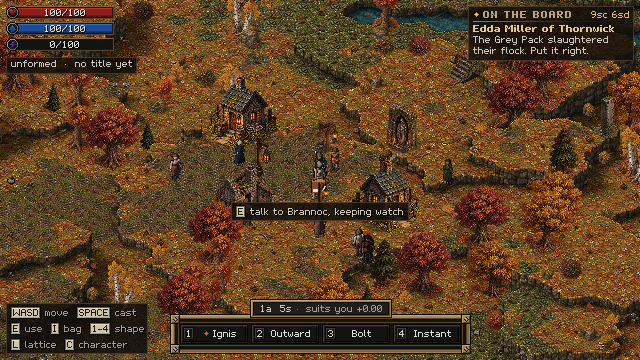
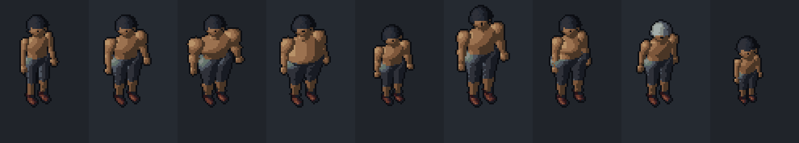
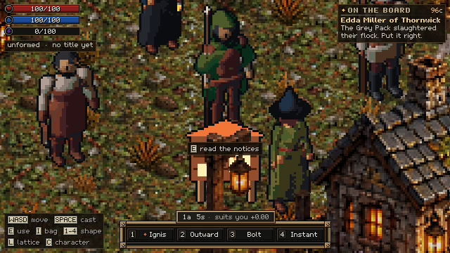
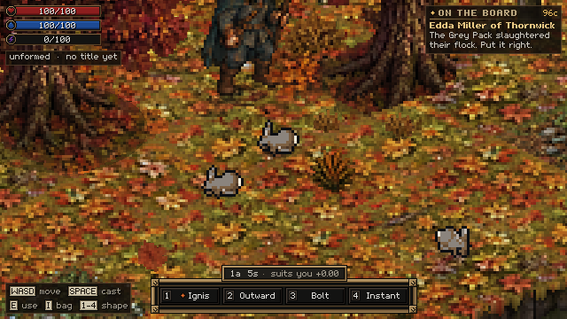
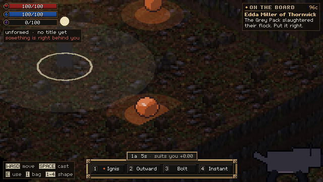
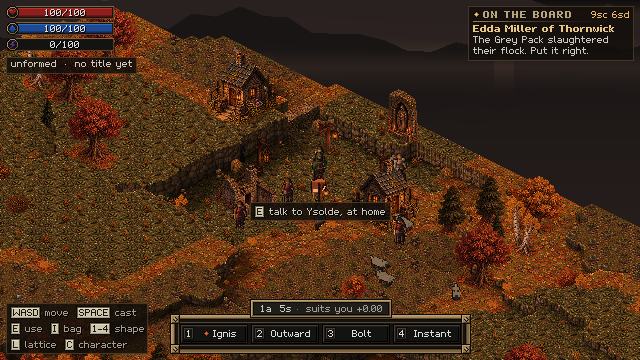

Day three: forty-four biomes, one body for everyone, and money from the book
24 September 2026 · Day 3
The busiest day yet, with more than forty pull requests merged. People are now drawn from a single procedural body. The world has 44 biomes stacked by altitude, and the hamlet sits in a forged start area with rivers. Money now works the way it does in the book, with real coins and change. Minions, runes, loot, saving and a multiplayer server all landed as well.

Everyone is one body
Sprawl's people used to be painted sprites. Now everyone is drawn from one procedural body, with sliders for muscle, fat, height, shape and age, dressed by whatever that person is wearing. Clothes are items grown out of the body, so a cloak fits a child and a blacksmith alike. A small renderer in the engine-free core draws them straight into sprite sheets.

The first pass came out too bulky. By lunchtime the bodies were slimmer and crisper, with a waist, two legs, and light and shadow to match the painted world.

Forty-four biomes, on a ladder
Nineteen biomes became forty-four over the course of the day: moor, badlands, salt flats, cloud forest, mangroves, bog, thorn forest, and an altitude ladder where treeline, alpine meadow and karst sit where the air is thin enough for them, among many others. Climb any mountain now and the country changes under your feet: woods give way to pine, then to the last stunted trees, then to bare rock and snow.
Rivers and lakes came too. Rain drains to the sea, lakes fill the hollows, and no river ever runs uphill. The forge's start area is now playable, with a pass that repairs any stairs and bridges its own rivers cut through.
Money from the book
The author's book sets how money works in this world, and the game now follows it. There's a ladder of coins, each worth ten of the one below. Purses hold real coins, and paying means making change. There is also a spread: a stall can't break a gold coin, so you have to find a money changer, and the changer takes a cut.
Things that follow you home
Minions arrived in the simulator: fifteen ways to get a follower, from food and nets to charm and raising the dead. Followers grow by doing things, live in pens and coops and crypts, lay eggs that hatch and imprint on you, and can be bought and sold. It all works on real maps in the simulator, but it isn't in the playable game yet.
Wildlife got its own systems too. Crows flush and rabbits bolt. Essence slimes merge into bosses, and you can bind one as a familiar, then feed it and evolve it. Runes are spells written into the ground or onto things that go off by themselves. Loot now carries a rarity read off the magic inside it, and dungeon chests hold real loot, the same every time for a given seed.


Under the bonnet
The game now saves: an autosave, a way to continue where you left off, and a world clock that cools feuds while time passes. A frame budget check runs before every change is accepted, after a village frame's wasted memory dropped by more than a hundredfold. Every spell now sounds, layered from its own coordinate in the lattice, and wolves and the matriarch got voices made in code. An authoritative server prototype streams the world to a thousand simulated players over the network, though the game doesn't play through it yet.
Five research agents
The team also sent five research agents through decades of RPG postmortems, talks and design essays, each having read Sprawl's design first. They agreed on five things, and the one that stings is that a simulation nobody can see is worth nothing. The villages are rich underneath, but on screen they are figures walking. That became a batch of future work: villagers who say what they decided, and history you can see in place names.
Where it stands tonight

Playable now: a forged autumn world with terraces, cliffs and rivers, and a hamlet of procedural people living their days in it. You can cast four-axis magic, answer notices by deed and get paid in real coin. There are wolves and a matriarch, slimes and familiars, dungeons with seeded loot, runes and saving. It plays on desktop and Android.
Not yet: most biomes have no painted art, and minions don't appear in the game. The villagers don't yet tell you what they are thinking. Multiplayer runs headless only, and melee and archery are still a plan.
End of day three: 1,989 passing tests, 67 pull requests merged, 44 biomes.